Chapter 18 - Introduction to Genetic Analysis (12th ed.)
Center for Quantitative Genetics and Genomics
Aarhus University
2026-02-21
What is a Population?
A population is defined by gene exchange
and shared contribution to future generations.
What is Population Genetics?
Driven by evolutionary forces:
Focus: how evolutionary forces change allele frequencies across generations.
DNA variation occurs at specific genomic locations
At a locus, individuals may carry different alleles.
Major types of genetic variation
Two important marker types
SNPs
Microsatellites (STRs)
SNPs \(\Rightarrow\) abundant and stable
Microsatellites \(\Rightarrow\) highly variable
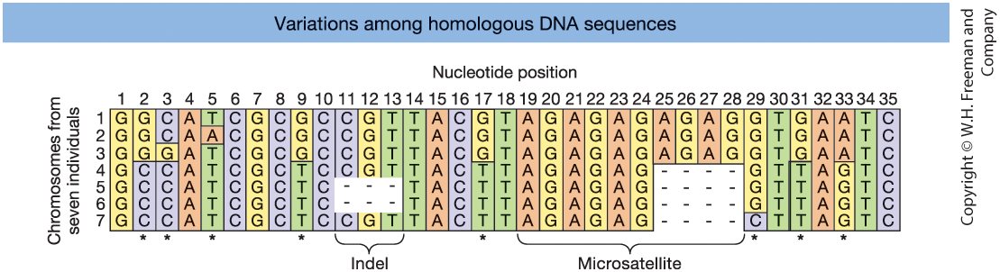
Figure 18-1. Aligned DNA sequences from seven chromosomes. Asterisks indicate SNPs. Indels and a microsatellite region are also shown.
Genomic technologies allow us to measure variation at thousands to millions of loci.
Marker-based genotyping
Sequencing-based approaches
Thousands to millions of SNPs can be genotyped simultaneously.
Large genotype datasets across many loci form the foundation of population genetic analysis.
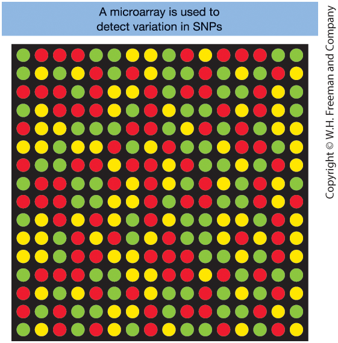
Figure 18-2. Microarray for SNP genotyping
Although we analyzed loci individually, they are physically organized along chromosomes.
These combinations of alleles on the same chromosome are called haplotypes.
Definition
A haplotype = combination of alleles
at multiple loci on the same chromosome.
Example: Two linked loci
Possible haplotypes: AB, Ab, aB, ab
Genotype vs. Haplotype (Phase)
Genotype (unphased): Alleles present, ignoring chromosome origin
Haplotype (phased): Alleles located on the same chromosome
Same genotype can have different phases.
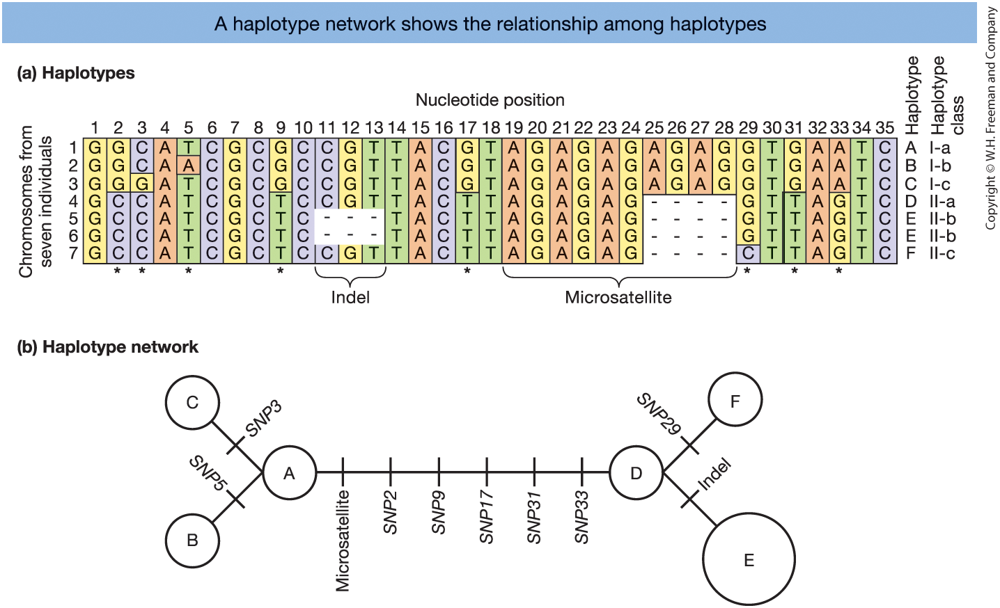
Figure 18-4.
(a) Six haplotypes (A–F) from aligned DNA sequences.
(b) Haplotype network showing mutational relationships.
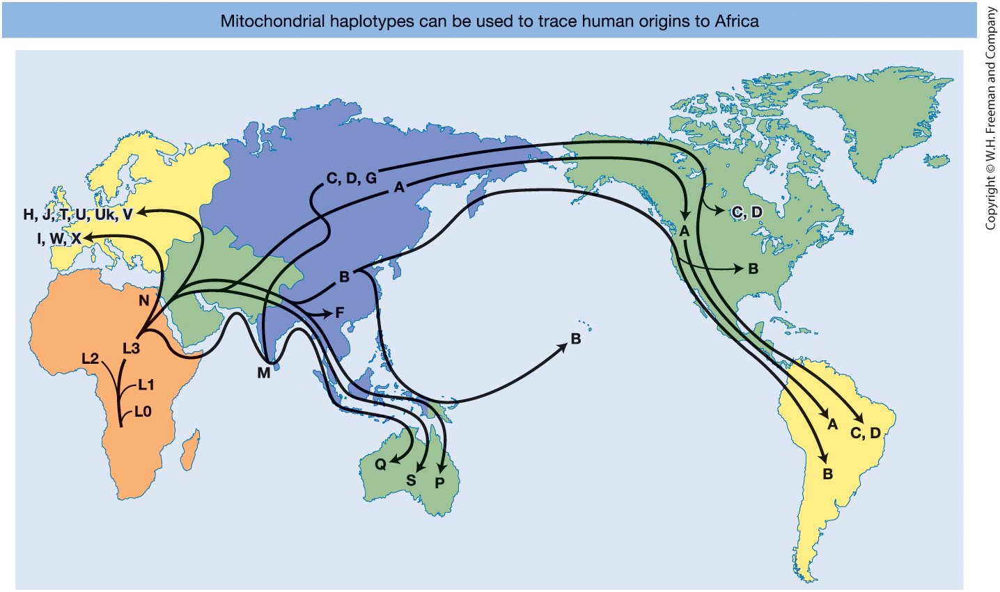
Figure 18-6 Human mitochondrial DNA haplotype network mapped globally.
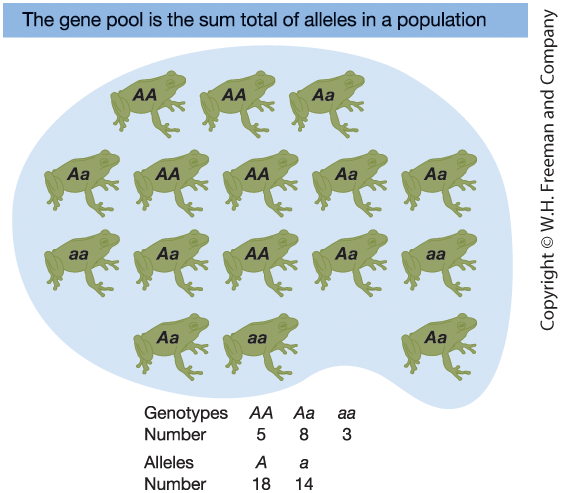
Figure 18-7. A frog gene pool
Gene pool refers to the total collection of alleles in the population.
Definition
Genotype frequency = proportion of individuals with a given genotype.
For a diploid locus with alleles A and a:
\[ f(AA) = \frac{\#AA}{N} \]
\[ f(Aa) = \frac{\#Aa}{N} \]
\[ f(aa) = \frac{\#aa}{N} \]
Genotype frequencies must sum to 1:
\[ f(AA) + f(Aa) + f(aa) = 1 \]
Numerical example (N = 16 frogs)
Counts:
Frequencies:
\[ f(AA) = \frac{5}{16} = 0.31 \]
\[ f(Aa) = \frac{8}{16} = 0.50 \]
\[ f(aa) = \frac{3}{16} = 0.19 \]
Check: \(0.31 + 0.50 + 0.19 = 1\)
Definition
Instead of counting genotypes, we can count alleles.
For a diploid population:
\[ \text{Total number of alleles} = 2N \]
Let:
Then:
\[ p = \frac{\#A}{2N} \qquad q = \frac{\#a}{2N} \]
Allele frequencies must sum to 1:
\[ p + q = 1 \]
Numerical example (N=16 frogs)
Total alleles:
\[ 2N = 2 \times 16 = 32 \]
Allele counts:
Frequencies:
\[ p = \frac{18}{32} = 0.56 \]
\[ q = \frac{14}{32} = 0.44 \]
Check: \(0.56 + 0.44 = 1\)
Hardy–Weinberg Law
If mating is random:
\[ f(AA) = p^2 \]
\[ f(Aa) = 2pq \]
\[ f(aa) = q^2 \]
\[ p^2 + 2pq + q^2 = 1 \]
If the Hardy–Weinberg assumptions hold, allele frequencies remain constant from generation to generation, and the population is in equilibrium.
Why does this work?
Allele frequency = probability of drawing that allele from the gene pool.
Let:
When gametes combine at random:
\[ f(AA) = p \times p = p^2 \]
\[ f(aa) = q \times q = q^2 \]
\[ f(Aa) = p \times q + q \times p = 2pq \]
Hardy–Weinberg applies only if:
These conditions define the null model.
Violations occur when:
Non-random mating
Individuals mate preferentially
Natural selection
Some genotypes have reduced survival or reproduction
Population structure
Subpopulations differ in allele frequencies
Finite population size
Random sampling effects (genetic drift)
Deviations from Hardy–Weinberg
suggest evolutionary forces are acting.
Mathematical relationship
At a locus with two alleles (A and a):
Let genotype frequencies be:
\[ f(AA) \]
\[ f(Aa) \]
\[ f(aa) \]
Allele frequencies:
\[ p = f(AA) + \tfrac{1}{2} f(Aa) \]
\[ q = f(aa) + \tfrac{1}{2} f(Aa) \]
\[ p + q = 1 \]
Intuition
Each individual carries two alleles.
Therefore:
This allows us to move back and forth
between genotype and allele frequencies.
Hardy–Weinberg Test (Theory Template)
| A/A | A/G | G/G | Sum | |
|---|---|---|---|---|
| Observed number | \(N_{AA}\) | \(N_{AG}\) | \(N_{GG}\) | \(N\) |
| Observed frequency | \(\dfrac{N_{AA}}{N}\) | \(\dfrac{N_{AG}}{N}\) | \(\dfrac{N_{GG}}{N}\) | \(1\) |
| Expected frequency | \(p^2\) | \(2pq\) | \(q^2\) | \(1\) |
| Expected number (\(E\)) | \(Np^2\) | \(N(2pq)\) | \(Nq^2\) | \(N\) |
| \(\chi^2\) contribution | \(\dfrac{(N_{AA}-E_{AA})^2}{E_{AA}}\) | \(\dfrac{(N_{AG}-E_{AG})^2}{E_{AG}}\) | \(\dfrac{(N_{GG}-E_{GG})^2}{E_{GG}}\) | \(\chi^2\) |
\(p\) = frequency of allele A
\(q\) = frequency of allele G
\(p + q = 1\)
Example: SNP rs9272426 (HLA-DQA1)
| A/A | A/G | G/G | Sum | |
|---|---|---|---|---|
| Observed number | 17 | 55 | 12 | 84 |
| Observed frequency | 0.202 | 0.655 | 0.143 | 1 |
| Expected frequency | 0.281 | 0.498 | 0.221 | 1 |
| Expected number | 23.574 | 41.851 | 18.574 | 84 |
| \(\chi^2\) contribution | 1.833 | 4.131 | 2.327 | 8.29 |
Total \(\chi^2 = 8.29\)
Compare to \(\chi^2_{(1 \text{ df})}\) to test equilibrium.
Data source: International HapMap Project
Computation
We test whether observed genotype counts deviate from Hardy–Weinberg expectations.
For each genotype:
\[ \chi^2_i = \frac{(O - E)^2}{E} \]
Total test statistic:
\[ \chi^2 = \sum \frac{(O - E)^2}{E} \]
Inference
Compare \(\chi^2\) to the chi-square distribution.
For a biallelic locus:
Why 1 df?
Once \(p\) is estimated, expected genotype frequencies are fixed.
If \(\chi^2\) is large \(\Rightarrow\)
deviation from HWE.
Large deviation suggests:
Random mating (HWE assumption)
If random mating holds:
If mating is not random
Hardy–Weinberg proportions may not hold.
Common violations:
Positive assortative mating
Effect:
Negative assortative mating
Effect:
Major Histocompatibility Complex (MHC)
Evolutionary consequence
Example: Tuscany HLA-DQA1 SNP shows heterozygote excess
Isolation by distance
Population structure
If combined:
\(\Rightarrow\) Excess of homozygotes \(\Rightarrow\) Wahlund effect
| Mechanism | Changes Allele Frequencies? | Changes Genotype Frequencies? | Typical Pattern |
|---|---|---|---|
| Positive assortative mating | No | Yes | Excess homozygotes |
| Negative assortative mating | No | Yes | Excess heterozygotes |
| Inbreeding | No (initially) | Yes | Excess homozygotes |
| Isolation by distance | Yes (spatially) | Yes | Gradual structure |
| Population subdivision | Yes (between groups) | Yes | Wahlund effect |
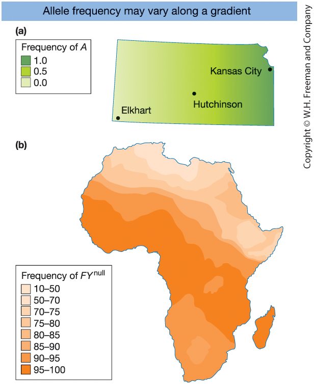
Figure 18-11
\(\Rightarrow\) Geographic variation produces
population structure
Local equilibrium ≠ global equilibrium
Definition
Inbreeding increases the probability that:
\(\Rightarrow\) Two alleles in an individual are
identical by descent (IBD)
\[ F = P(\text{two alleles are IBD}) \]
IBD = both alleles trace back
to the same ancestral copy.
Biological consequence
As \(F\) increases:
Risk depends on:
Half-sibs share one common parent.
Offspring inbreeding coefficient:
\[ F = \frac{1}{8} \]
If the shared parent is not inbred.
Interpretation
At any locus:
\(\Rightarrow\) 12.5% probability
that two alleles are identical by descent.
If the common ancestor is already inbred:
\[ F = \frac{1}{8}(1 + F_A) \]
For individual \(X\) whose parents share ancestor \(A\):
\[ F_X = \sum_A \left(\frac{1}{2}\right)^{n_1+n_2+1}(1+F_A) \]
Where:
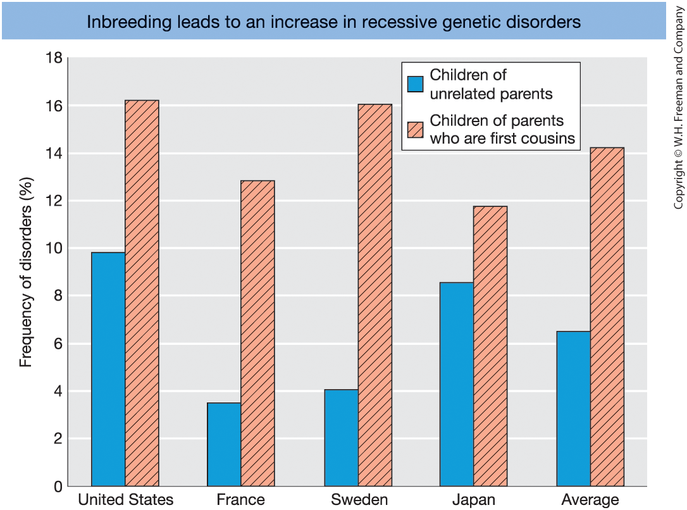
Figure 18-13 Frequency of genetic disorders among children of unrelated parents (blue columns) compared to that of children of parents who are first cousins (red columns with diagonal lines). [Data from C. Stern, Principles of Human Genetics, W. H. Freeman, 1973.]
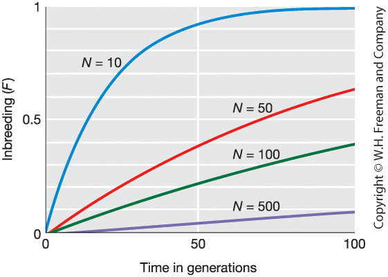
Figure 18-13
Increase in inbreeding coefficient (\(F\)) over generations for different population sizes (\(N\)).
Smaller \(N\) \(\Rightarrow\) Faster increase in \(F\)
Theory: How do we measure variation?
For a DNA region:
Segregating sites (\(S\))
Number of polymorphic nucleotide positions
Number of haplotypes (\(N_H\))
Distinct sequence types observed
Allele frequencies (\(p_i\))
Gene diversity (GD)
\[GD = 1 - \sum p_i^2\]
Nucleotide diversity (\(\pi\))
Average pairwise nucleotide differences per site
Numerical example: G6PD (5102 bp)
Sample:
Worldwide allele frequencies:
Regional diversity:
| Population | Gene Diversity | Nucleotide Diversity |
|---|---|---|
| Africans | 0.47 | 0.0008 |
| Non-Africans | 0.00 | 0.0002 |
Africans show substantially higher genetic variation.
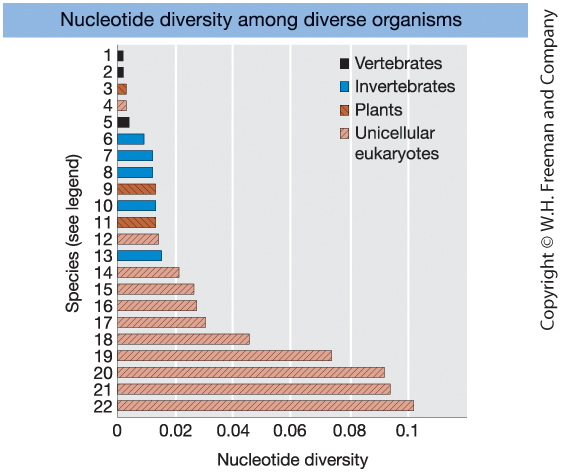
Figure 18-15
Levels of nucleotide diversity
at synonymous (silent) sites
in diverse organisms.
Key pattern:
Evolutionary forces
Mutation
Creates new alleles
Migration (gene flow)
Introduces alleles from other populations
Recombination
Reshuffles alleles into new haplotypes
Genetic drift
Random sampling effects in finite populations
Selection
Differential reproductive success
What these forces determine
Together, these forces determine
the evolutionary trajectory of populations.
Mutation: the source of new alleles
Mutation introduces new alleles into the gene pool.
Key points:
Estimating mutation rates
Pedigree-based approach:
Because mutations are rare, many nucleotides must be sequenced to estimate \(\mu\) reliably.
Migration (gene flow)
Movement of individuals or gametes between populations.
Consequences:
Genetic admixture
Result of gene flow between previously separated populations.
Admixture is the genomic signature of migration.
Parental haplotypes (before recombination)
Consider two linked loci:
Suppose the original haplotypes are:
These combinations are inherited together because the loci are physically linked.
Recombinant haplotypes (after crossover)
A crossover between loci A and B can generate:
Recombination:
Over time, recombination reshapes patterns of genetic variation across loci.
Linkage equilibrium
Two loci are in linkage equilibrium
when haplotypes occur as expected by chance.
If alleles combine independently:
\[ P_{AB} = p_A p_B \]
That is, the frequency of haplotype \(AB\)
equals the product of the allele frequencies.
Linkage disequilibrium (LD)
If:
\[ P_{AB} \neq p_A p_B \]
then alleles are associated non-randomly
across loci.
Measuring LD
For two biallelic loci (A/a and B/b):
Define:
\[ D = P_{AB} - p_A p_B \]
Interpretation:
\(D = 0 \quad \text{linkage equilibrium}\)
\(D \neq 0 \quad \text{linkage disequilibrium}\)
\(D\) measures the magnitude and direction
of deviation from independence.
How LD arises
LD can arise when alleles become associated non-randomly across loci.
Common causes:
A new mutation appears on a single chromosome background
\(\Rightarrow\) It is initially associated with nearby alleles
Migration (admixture) mixes populations
with different haplotype frequencies
As a result, newly introduced alleles begin in LD with neighboring loci.
LD decay by recombination
Recombination gradually breaks down non-random associations.
Let \(r\) = recombination fraction between loci.
\[ D_{t+1} = (1-r)D_t \]
Over generations, recombination erodes LD.
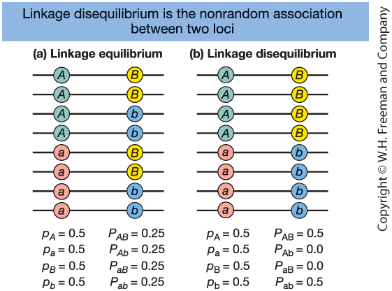
Figure 18-17
Two loci (A and B), each with two alleles.
Linkage equilibrium
\(\Rightarrow\) Alleles associate randomly
Linkage disequilibrium (LD)
\(\Rightarrow\) Non-random association of alleles
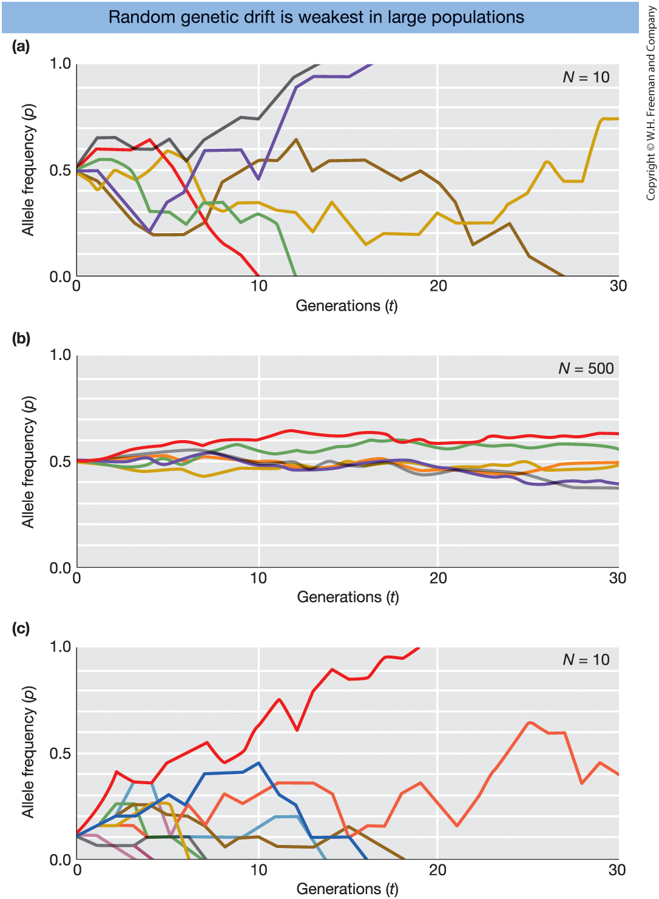
Figure 18-18
Simulations of random genetic drift.
Each colored line = one simulated population
tracked for 30 generations.
Hardy–Weinberg assumes an infinitely large population.
Real populations are finite.
In finite populations, allele frequencies change by chance:
Random genetic drift
Theory
Neutral mutations accumulate over time.
If the mutation rate is constant, DNA differences increase at a steady rate.
For two diverging species:
\[ d = 2 \mu t \]
Rearranged:
\[ t = \frac{d}{2\mu} \]
Where:
Interpretation and Example
Both lineages accumulate mutations after they split.
The factor 2 reflects: - Mutation in lineage 1
- Mutation in lineage 2
Example:
Humans and chimpanzees differ by ~1.8%
at neutral sites.
Using the human mutation rate:
Estimated divergence ≈ 6 million years ago.
Assumptions:
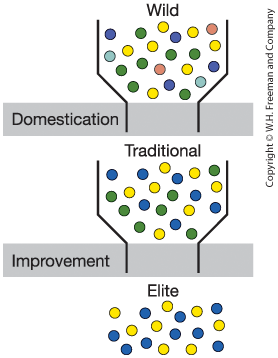
Crop domestication and improvement bottlenecks
Wild population
\(\Rightarrow\) Traditional varieties
\(\Rightarrow\) Elite modern varieties
Each step reduces genetic diversity.
Colored dots = different alleles.
Definition
Inbreeding = mating between relatives.
Because relatives share alleles from common ancestors, offspring are more likely to inherit identical copies of an allele.
Genetic consequences:
Key concept:
Inbreeding increases homozygosity.
Biological consequences
However, in some species inbreeding can be advantageous:
The effects depend on ecological context.
Natural selection
Individuals with certain heritable traits
are more likely to survive and reproduce.
Key ingredients:
Evolution = change in allele frequencies over time.
Fitness
Darwinian fitness = reproductive success.
Absolute fitness (\(W\)):
Number of offspring produced.
Relative fitness (\(w\)):
Fitness relative to the most successful genotype.
Example:
If the most successful genotype produces 10 offspring:
Selection acts through differences in fitness.
Genotype fitnesses
| Genotype | Relative fitness (\(w\)) |
|---|---|
| A/A | 1.0 |
| A/a | 1.0 |
| a/a | 0.5 |
Allele A is beneficial and dominant.
Only \(a/a\) individuals have reduced fitness.
Consequence
Because A-containing genotypes
produce more offspring,
Allele A increases in frequency.
Example:
Initial frequency: \(p = 0.10\)
After one generation: \(p = 0.17\)
Selection increases the frequency
of beneficial alleles.
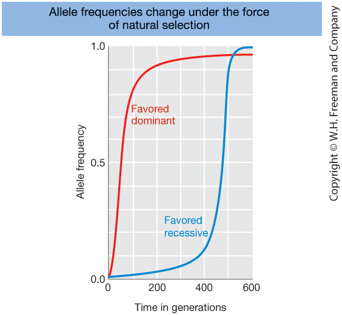
Figure 18-21
Change in allele frequency over time for:
Both alleles increase due to natural selection, but at different rates.
Natural selection
Directional selection
Balancing selection
Artificial selection
Selection imposed by humans.
Examples:
Artificial selection = natural selection
directed by humans.
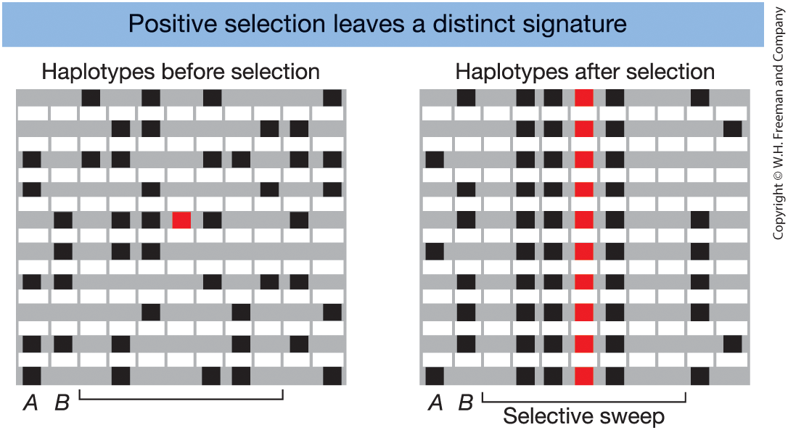
Figure 18-22
Haplotypes before and after
a beneficial allele (red)
is swept to fixation.
After selection:
| Gene | Trait / Function | Population |
|---|---|---|
| G6PD | Malaria resistance | Africans |
| Hb (β-globin) | Malaria resistance (sickle-cell) | Africans |
| CCR5 | Resistance to HIV/AIDS | Europeans |
| LCT | Lactase persistence (milk digestion) | Europeans, Africans |
| SLC24A5 | Skin pigmentation | Europeans |
| MHC | Infectious disease resistance | Multiple populations |
These genes show evidence of recent natural selection.
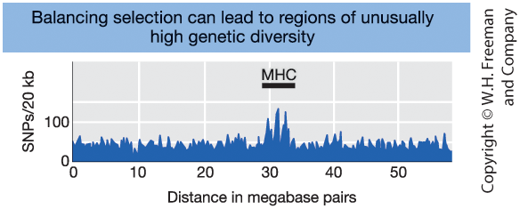
Figure 18-24
Number of SNPs along chromosome 6.
The MHC region shows a spike of unusually high diversity.
Key idea: Balancing selection can maintain multiple alleles at a locus.
Mutation–Drift Balance (Neutral Variation)
Mutation introduces new alleles.
Genetic drift removes variation.
At equilibrium:
Loss of heterozygosity (drift) = Gain of heterozygosity (mutation)
Equilibrium heterozygosity:
\[ \hat{H} = \frac{4N\mu}{1 + 4N\mu} \]
(Assumes no selection)
Mutation–Selection Balance (Deleterious Alleles)
Mutation creates harmful alleles.
Natural selection removes them.
At equilibrium:
New mutations =
Alleles removed by selection
For a recessive deleterious allele:
\[ q_{eq} = \sqrt{\frac{\mu}{s}} \]
Real-world applications
Population genetics informs:
Core principles applied
These applications rely on:
Population genetics connects
DNA variation → population patterns → practical decisions.
Genetic risks in small populations
When population size declines:
Consequences:
Management dilemma
Key question:
Should conservation programs
minimize inbreeding
or allow it to purge deleterious alleles?
Theoretical idea:
Empirical evidence:
Why allele frequencies matter
Population genetics allows us to:
Using Hardy–Weinberg equilibrium:
Example: recessive disease
Under Hardy–Weinberg:
Effect of inbreeding:
\[ \text{Homozygote frequency} = q^2 + Fpq \]
Genetic basis of forensic analysis
DNA identification relies on:
Microsatellite markers (STRs)
Highly polymorphic, multi-allelic loci
Population allele frequencies
Estimated from reference databases
Hardy–Weinberg equilibrium
Used to calculate genotype probabilities
Multiple independent loci are analyzed
to increase discriminatory power.
Statistical interpretation
We evaluate:
\[ P(\text{match} \mid \text{different individuals}) \]
This is the probability that a random, unrelated person
would share the same DNA profile.
Assuming independence across loci:
Very small probability → strong statistical evidence
These are measurable genetic patterns.
Hardy–Weinberg equilibrium
Defines the expectation of no evolution.
Deviations indicate evolutionary forces.
Allele frequencies change due to:
Evolution = change in allele frequencies over time
Population genetics connects
patterns → processes → consequences
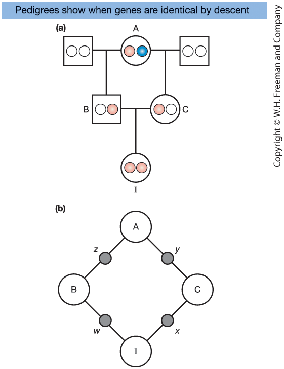
Figure 18-12. Half-sib pedigree
Closed loop:
\(I \rightarrow B \rightarrow A \rightarrow C \rightarrow I\)
Consider the half-sib pedigree in Figure 18-12:
A has two gene copies:
I is inbred because there is a closed ancestral loop in the pedigree.
If the two copies in I trace back to the same physical copy in A, they are identical by descent (IBD).
The probability of this event is the inbreeding coefficient, \(F_I\).
Figure 18-12. Half-sib pedigree
Closed loop:
\(I \rightarrow B \rightarrow A \rightarrow C \rightarrow I\)
Using Figure 18-12b (simplified format):
A → B transmits allele \(z\)
A → C transmits allele \(y\)
B → I transmits allele \(w\)
C → I transmits allele \(x\)
We want:
\[ F_I = P(w \sim x) \]
That is, the probability that I’s two alleles are IBD.
Figure 18-12. Half-sib pedigree
Closed loop:
\(I \rightarrow B \rightarrow A \rightarrow C \rightarrow I\)
First assume:
\[ F_A = 0 \]
Now compute step by step:
\[ P(w \sim z) = \frac{1}{2} \]
\[ P(x \sim y) = \frac{1}{2} \]
\[ P(y \sim z) = \frac{1}{2} \]
Multiply independent probabilities:
\[ F_I = \frac{1}{2} \times \frac{1}{2} \times \frac{1}{2} = \frac{1}{8} \]
So the offspring of half-sib matings has:
\[ F_I = \frac{1}{8} \]
Figure 18-12. Half-sib pedigree
Closed loop:
\(I \rightarrow B \rightarrow A \rightarrow C \rightarrow I\)
If A is inbred:
Probability that \(y\) and \(z\) are IBD:
So:
\[ P(y \sim z) = \frac{1}{2} + \frac{1}{2}F_A = \frac{1}{2}(1 + F_A) \]
Now:
\[ F_I = \frac{1}{2} \times \frac{1}{2} \times \frac{1}{2}(1+F_A) \]
\[ F_I = \left(\frac{1}{2}\right)^3 (1+F_A) \]
If \(F_A = 0\):
\[ F_I = \frac{1}{8} \]
General formula
For any individual \(X\):
\[ F_X = \sum_A \left(\frac{1}{2}\right)^{n_1+n_2+1}(1+F_A) \]
Where:
Sum over all common ancestors \(A\).
Interpretation
If the common ancestor is not inbred (\(F_A = 0\)):
\[ F_X = \left(\frac{1}{2}\right)^{n_1+n_2+1} \]